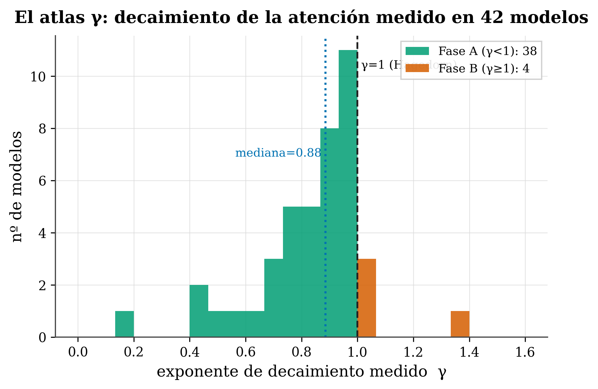

17 El atlas γ: el decaimiento medido en 42 modelos
Dónde estamos. En el Cap. 15 aprendimos a medir (y a predecir) el exponente γ de un modelo. La pregunta natural: si podemos medirlo en uno, midámoslo en muchos. Eso es el atlas γ —γ medido en 42 modelos de cuatro familias de arquitectura (Marín 2026)— y es algo que ningún otro manual tiene: un mapa común donde situar cualquier transformer según cómo atiende a lo largo de la distancia. Este capítulo explica el mapa con calma, qué nos dice, y —con la misma honestidad de siempre— qué no podemos concluir de él.
17.1 La idea en una frase
Medido γ en 42 modelos distintos, emerge un mapa: la mayoría de los transformers entrenados miran lejos (γ<1), con una mediana cerca —pero por debajo— de la frontera γ=1.
17.2 Conceptos clave y su papel en el transformer
Antes de entrar en detalle, definimos los términos de este capítulo y para qué sirve cada uno dentro de un transformer:
- Atlas γ. Definición: el exponente de decaimiento γ medido en 42 modelos de cuatro familias de arquitectura. En el transformer: convierte γ de propiedad de un modelo en un mapa común donde situar y comparar a todos.
- γ como coordenada comparable. Definición: un único número que coloca modelos muy distintos (denso, GQA, MoE, SSM) en el mismo eje. En el transformer: permite comparar cómo atiende a lo largo de la distancia sin importar la arquitectura.
- Fase A (γ<1) y Fase B (γ>1). Definición: cola pesada que mira lejos (Fase A) frente a atención que concentra cerca (Fase B). En el transformer: indica si el modelo aprovecha contexto amplio o no — clave para compresión de KV-cache (Cap. 20).
- Frontera de Hagedorn (γ=1). Definición: la línea que separa ambas fases. En el transformer: los modelos se agolpan justo por debajo de ella (mediana ≈0,885), un patrón que no parece casual y se retoma en el Cap. 21.
- Cross-arquitectura. Definición: que γ es el mismo tipo de medida para densas, GQA, MoE y SSM. En el transformer: es lo que hace único al atlas — pone a un Mamba y a un GPT en el mismo eje.
- R² del ajuste. Definición: la bondad con que
A(d)∝d^−γdescribe la atención real de cada modelo (alto = buen ajuste). En el transformer: señala cuándo γ es un resumen fiable y cuándo es más grueso (R²~0,85). - γ crudo vs. control within-model. Definición: comparar el γ tal cual entre modelos mezcla factores (θ, datos, arquitectura); el experimento limpio varía θ dentro del mismo modelo. En el transformer: el atlas describe el paisaje pero no aísla causas por sí solo.
En resumen: el atlas es una foto reproducible del paisaje de γ, no una ley eterna ni una prueba causal.
17.3 Para qué sirve un atlas
Hasta ahora γ era una propiedad de un modelo. Pero medirlo en muchos lo convierte en una coordenada comparable: un único número que coloca a modelos tan distintos como un GPT denso, uno con GQA, un Mixture-of-Experts o incluso un modelo de espacio de estados (Mamba) en el mismo eje. Es como pasar de medir la temperatura de una ciudad a tener el mapa del tiempo de todo un país: lo interesante no es un punto, es el patrón que dibujan todos juntos.
17.4 El mapa

figures/make_fig16_atlas.py sobre data/gamma_atlas.csv.
17.5 Qué nos dice el mapa (con calma)
Tres lecturas, y qué significa cada una:
1. Casi todos miran lejos (38 de 42 en Fase A, γ<1). Esto es revelador. Recuerda (Cap. 15) que γ<1 significa cola pesada: la atención cae despacio con la distancia, de modo que el modelo reparte peso también a tokens lejanos. Que la enorme mayoría de los modelos entrenados acaben ahí sugiere que aprovechar contexto amplio es la norma, no la excepción —los transformers, dejados a su aire, tienden a la mirada larga, no a la visión de túnel—.
2. La mediana (γ≈0,885) está cerca de la frontera, pero por debajo. Los modelos no se reparten al azar: se agolpan justo por debajo de γ=1. Es como si el entrenamiento los empujara hacia el borde del régimen de “mirar lejos” sin llegar a cruzarlo. Esa cercanía a la frontera (la “transición de Hagedorn” del Cap. 21) no es casualidad y la retomaremos.
3. Hay diversidad real (rango γ ≈ 0,15 → 1,34). No todos son iguales: hay modelos de cola muy pesada (γ≈0,15, mirada larguísima) y unos pocos en Fase B (γ>1) que concentran cerca. Ese rango es el que conecta con decisiones prácticas: cuánto contexto aprovecha de verdad un modelo, cuánto se puede comprimir su KV-cache (Cap. 20).
17.6 La pieza única: es cross-arquitectura
Lo que hace especial al atlas no es solo el número de modelos, sino que γ es el mismo tipo de medida para arquitecturas muy distintas —densas, GQA, MoE y SSM—. Pocos diagnósticos permiten poner a un Mamba y a un GPT en el mismo eje. γ sí.
Tres cautelas, para no sobreinterpretar: 1. Comparar el γ crudo entre modelos muy distintos mezcla factores. Dos modelos de 7-8B pueden diferir en γ por su θ, sus datos y su arquitectura a la vez (la descomposición del Cap. 15). El experimento limpio —que sí controla todo— es variar θ dentro del mismo modelo (lo veremos con los sumideros, Cap. 17). El atlas describe; no aísla causas por sí solo. 2. La calidad del ajuste varía. La ley d^−γ ajusta muy bien en general (R²>0,95 en muchos), pero en algunos modelos el R² es más bajo (~0,85): ahí γ es un resumen más grueso. Lo indicamos modelo a modelo (la columna R2 del dataset). 3. Es una foto, no una ley universal. 42 modelos en un momento dado; un atlas se amplía y se corrige. Los datos están publicados para que cualquiera lo reproduzca y lo discuta.
17.7 De dónde salen los datos
El atlas se mide con un procedimiento reproducible (ajustar A(d)∝d^−γ sobre la atención real de cada modelo) y se publica como conjunto de datos abierto —para que no haya que creernos nada: se descarga, se reproduce, se critica—. (El detalle de cómo medir tu propio γ está en el cookbook de referencia, R4.)
tafagent tiene un modo Phase diagram que sitúa un panel de modelos en el eje γ (Fase A vs Fase B), y al perfilar tu modelo te dice en qué punto del atlas cae. Es el atlas hecho interactivo: añade el tuyo y compáralo.
17.8 Resumen
- El atlas γ mide el exponente de decaimiento en 42 modelos de 4 familias —una coordenada cross-arquitectura que nadie más tiene—.
- Lectura: 38 de 42 en Fase A (γ<1, miran lejos) → aprovechar contexto amplio es la norma; mediana ≈0,885 (se agolpan justo por debajo de la frontera γ=1); rango 0,15–1,34 (diversidad real).
- Único: γ pone densas, GQA, MoE y SSM en el mismo eje.
- Honesto: el γ crudo cross-modelo mezcla factores (el control limpio es within-model, Cap. 17); el R² varía; es una foto reproducible, no una ley eterna.
Siguiente (Capítulo 17): una de esas “lecturas crudas” engaña —la concentración (sumideros)—. Veremos que es independiente de γ, con el experimento limpio que controla todo: el θ-rescale dentro del mismo modelo.
17.9 Ejercicios
- Leer el mapa. Si 38 de 42 modelos tienen γ<1, ¿qué tienden a hacer los transformers entrenados: mirar lejos o concentrarse cerca? ¿Por qué?
- La mediana. ¿Qué tiene de llamativo que los modelos se agolpen justo por debajo de γ=1 en lugar de repartirse por todo el rango?
- Honestidad. ¿Por qué comparar el γ de dos modelos distintos no basta para decir “este mira más lejos por su arquitectura”? ¿Qué experimento sí lo aislaría?
- Ajuste. Si un modelo tiene R²=0,85 en su ajuste de γ, ¿con cuánta confianza tomarías su γ frente a otro con R²=0,98?
El atlas completo de γ y los datos por modelo en que se basa este capítulo están en abierto: Predicting How Transformers Attend (Zenodo).